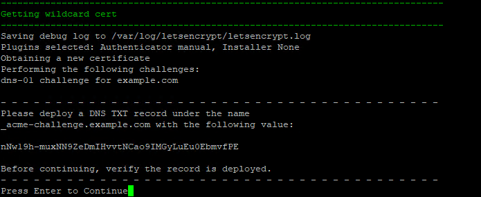

Installation¶
General Information¶
Minimum requirements¶
Hardware / OS¶
A fresh linux VM running either Ubuntu 20.04 LTS or Debian 10/11 with 2GB RAM
Warning
The provided install script assumes a fresh server with no software installed on it. Attempting to run it on an existing server with other services will break things and the install will fail.
Note
The install script has been tested on the following public cloud providers: DigitalOcean, Linode, Vultr, BuyVM (highly recommended), Hetzner, AWS, Google Cloud and Azure, as well as behind NAT on Hyper-V, Proxmox and ESXi.
Note
CPU: 1 core is fine for < 200 agents with limited checks/tasks.
Disk space and speed are dependent on your use case. Of course faster is better SSD/NVMe. Space is dependent on how long you're keeping historical data, and how many checks/script runs and their output size. 50GB should be fine for < 12months of history on < 200 agents with < 30 checks/tasks run at reasonable time intervals.
Network Requirements¶
- A real (internet resolvable) domain is needed to generate a Let's Encrypt wildcard cert. If you cannot afford to purchase a domain ($12 a year) then you can get one for free at freenom.com
- example.local is NOT a real domain. No you don't have to expose your server to the internet
- A TOTP based authenticator app. Some popular ones are Google Authenticator, Authy and Microsoft Authenticator.
Update Recommendations¶
Note
We highly recommend staying current with updates (at least every 3 months when you update your SSL certs is a good minimum) while Tactical RMM is still working towards its 1.0 release.
Until we reach production release, there may be architectural changes that may be made to Tactical RMM and only a regular patching schedule is supported by developers.
Option 1: Easy Install on a VPS¶
Install on a VPS: DigitalOcean, Linode, Vultr, BuyVM (highly recommended), Hetzner, AWS, Google Cloud and Azure to name a few
Use something that meets minimum specs
Run Updates on OS¶
SSH into the server as root.
Download and run the prereqs and latest updates
apt update
apt install -y wget curl sudo
apt -y upgrade
If a new kernel is installed, then reboot the server with the reboot command
Create a linux user¶
Create a linux user named tactical to run the rmm and add it to the sudoers group.
Create User
adduser tactical
usermod -a -G sudo tactical
useradd -m -s /bin/bash tactical
usermod -a -G sudo tactical
Setup the firewall (optional but highly recommended)¶
Info
Skip this step if your VM is not publicly exposed to the world e.g. running behind NAT. You should setup the firewall rules in your router instead (ports 22, 443 and 4222 TCP).
ufw default deny incoming
ufw default allow outgoing
ufw allow https
ufw allow proto tcp from any to any port 4222
Info
SSH (port 22 tcp) is only required for you to remotely login and do basic linux server administration for your rmm. It is not needed for any agent communication.
SSH Firewall Rule
Allow ssh from only allowed IP's (highly recommended)
ufw allow proto tcp from X.X.X.X to any port 22
ufw allow proto tcp from X.X.X.X to any port 22
Allow ssh from everywhere (not recommended)
ufw allow ssh
Enable and activate the firewall
ufw enable && ufw reload
Note
You will never login to the server again as root again unless something has gone horribly wrong, and you're working with the developers.
Create the A records¶
We'll be using example.com as our domain for this example.
Info
The RMM uses 3 different sites. The Vue frontend e.g. rmm.example.com which is where you'll be accessing your RMM from the browser, the REST backend e.g. api.example.com and Meshcentral e.g. mesh.example.com
- Get the public IP of your server with
curl https://icanhazip.tacticalrmm.io - Open the DNS manager of wherever the domain you purchased is hosted.
- Create 3 A records:
rmm,apiandmeshand point them to the public IP of your server:

Run the install script¶
Switch to the tactical user
su - tactical
Download and run the install script
wget https://raw.githubusercontent.com/amidaware/tacticalrmm/master/install.sh
chmod +x install.sh
./install.sh
Answer the initial questions when prompted. Replace example.com with your domain.

Deploy the TXT record in your DNS manager for Lets Encrypt wildcard certs¶
Warning
TXT records can take anywhere from 1 minute to a few hours to propagate depending on your DNS provider.
You should verify the TXT record has been deployed first before pressing Enter.
A quick way to check is with the following command:
dig -t txt _acme-challenge.example.com
or test using: https://viewdns.info/dnsrecord/ Enter: _acme-challenge.example.com

Create a login for the RMM web UI:

A bunch of URLS / usernames / passwords will be printed out at the end of the install script. Save these somewhere safe. Recover them if you didn't
Login¶
Navigate to https://rmm.example.com and login with the username/password you created during install.
Once logged in, you will be redirected to the initial setup page.
Create your first client/site and choose the default timezone.
You're Done¶
Option 2: Install behind NAT Router¶
Install in your local network using: Dedicated hardware, Hyper-V, Proxmox or ESXi. All been tested and work fine.
Do everything from Option 1: Easy Install
If you only have agents on the private network/subnet¶
Make sure your local DNS server (or agents hosts file) have your Tactical RMM server IP addresses for the 3 domain names: rmm, api and mesh
Agents exist outside the private network/subnet - Setup Port Forwarding¶
If you have agents outside your local network: Make sure the public DNS servers have A records for the 3 Tactical RMM server domain names: rmm, api and mesh
Login to your router/NAT device.
- Set your TRMM server as a static IP (Using a DHCP reservation is usually safer)
- Create 2 port forwarding rules.
TCP Port 443andTCP Port 4222to your TRMM servers private IP address.
Note
https://portforward.com/ can help with Port Forwarding setup
You're Done¶
Option 3: Installs by Network Wizards¶
Use the scripts above.
Requirements¶
- TLD domain name which is internet resolvable (this is for a LetsEncrypt DNS wildcard request during the install script validated by DNS txt record).
- Test using: https://viewdns.info/dnsrecord/ or https://dnschecker.org/. Enter:
_acme-challenge.example.comasTXT
- Test using: https://viewdns.info/dnsrecord/ or https://dnschecker.org/. Enter:
- Agents need to be able to connect to your server via DNS lookup (hosts file, local DNS, smoke signals etc.).
- Test from agent:
ping rmm.example.com. Should result in the IP of your Tactical RMM server - Test from agent:
ping api.example.com. Should result in the IP of your Tactical RMM server - Test from agent:
ping mesh.example.com. Should result in the IP of your Tactical RMM server
- Test from agent:
Note
Did you notice #2 doesn't need to be something publicly available?
That's it. You're a wizard, you know how to satisfy these 2 items.
You'll probably enjoy browsing thru the Unsupported section of the docs.
Update Regularly¶
We've said it before, we'll say it again.
-
We recommend regular updates.
-
Every 2-3 months.
- Do it when you update your SSL certs.
-